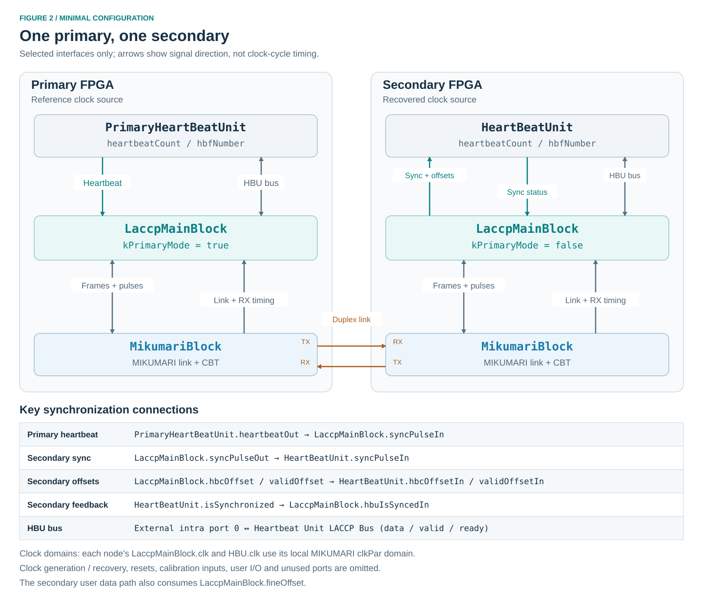
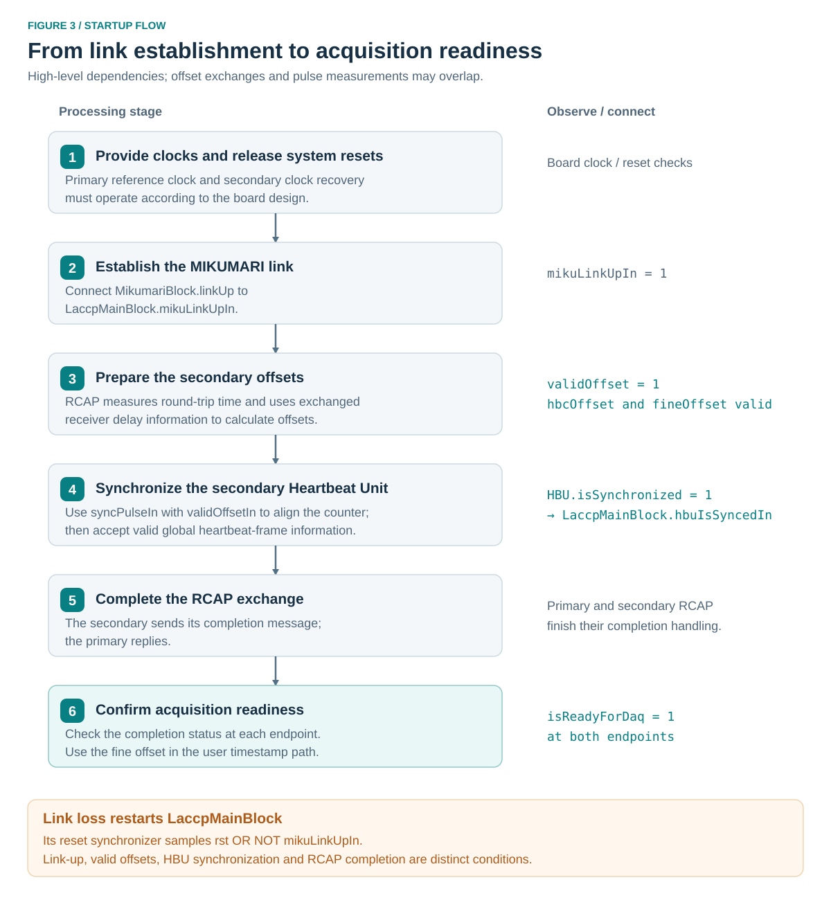

Usage
This page describes a primary–secondary connection using one MIKUMARI link. It gives the LACCP connections and bring-up checks; clock generation, FPGA pin assignments, and board constraints belong to the integrating project. See Get Started for the concepts and LACCP for signal definitions.
Prerequisites
Prepare a bidirectional MIKUMARI connection and the clocks and resets required by both endpoints. Consult the MIKUMARI User Guide for physical-layer integration. The LACCP README lists AMD 7-series and UltraScale support; the v2.0 change log also identifies UltraScale+. Its stated tool test environment is Vivado 2025.2 or earlier.
For the following connection example, use:
| Setting | Primary | Secondary |
|---|---|---|
| Clock source | Local reference | Clock recovered from the primary's modulated signal |
| MIKUMARI configuration | Compatible CDCM-8 settings | Matching CDCM-8 settings |
| Example parallel / fast clock | 125 / 500 MHz | 125 / 500 MHz |
| MIKUMARI pulse mode | kHighPrecision = false |
kHighPrecision = false |
| LACCP endpoint | LaccpMainBlock in primary mode |
LaccpMainBlock in secondary mode |
| Heartbeat source | PrimaryHeartBeatUnit |
HeartBeatUnit in synchronized mode |
The frequencies are example values, not a timing-closure guarantee for every device. Set kFastClkFreq to the actual fast-clock frequency. The current LACCP offset arithmetic uses eight half-fast-clock periods per system-clock period, consistent with this CDCM-8 configuration.
Add the sources
Obtain the LACCP and MIKUMARI repositories and add their required RTL to the Vivado project. Use a submodule or a recorded revision so that the two source versions used by the design are identifiable.
| Source group | Integration action |
|---|---|
| MIKUMARI | Add the CBT, MIKUMARI link, and Wrapper/MikumariBlock.vhd sources needed by the selected FPGA implementation. |
| LACCP packages | Add defLaccp.vhd, defHeartBeatUnit.vhd, and defBitwiseOp.vhd from laccp/. |
| LACCP blocks | Add the main block, frame TX/RX, Bus Switch, RCAP, RLIGP, and both Heartbeat Unit entities. |
| LACCP utility | Add the VHDL utility files, including MyFifoComClock and its RAM dependencies. |
| Timing arithmetic | Add CalcFineLantency_US.v and CalcCalibDelay.v. The former instantiates udiv_q_cbt_axis, supplied by MIKUMARI together with its divider core. |
Assign the VHDL sources referenced as mylib.* to the mylib library. Analyze packages before their users, and RAM units before the FIFO. Let Vivado update compile order after all files are added. No LACCP source requires VHDL-2008 according to the repository README.
RCAP references the Verilog timing modules through work.CalcFineLantency_US and work.CalcCalibDelay; preserve those mixed-language bindings when setting up project libraries. Check elaboration for both modules and their divider dependencies, including when using a 7-series secondary: the secondary generate branch instantiates the UltraScale calculation modules as well.
Configure the nodes

Endpoint settings
| Setting or input | Primary | Secondary |
|---|---|---|
kPrimaryMode |
true |
false |
kNumInterconnect |
0 for this example |
0 for this example |
kFastClkFreq |
Actual fast-clock frequency in MHz | Actual fast-clock frequency in MHz |
enDebug |
Enable if internal debug probes are needed | Enable if internal debug probes are needed |
enCalibDelay |
Set explicitly; the correction is calculated in the secondary | Enable when using the additional calibration correction |
upstreamOffset |
Zero at the root | Zero in this example; a secondary does not advertise upstream timing to another secondary |
hbuIsSyncedIn |
Tie low; primary RCAP does not use this feedback | Connect from HeartBeatUnit.isSynchronized |
syncPulseIn |
Connect from PrimaryHeartBeatUnit.heartbeatOut |
Tie low for this leaf-only example |
Configure the secondary HBU with enStandAlone = '0' and keepLocalHbfNum = '0'. The latter permits correction if a later received frame number differs from the local number. Tie its local hbfCtrlGateIn, forceOn, and hbfFlagsIn low when using upstream acquisition controls.
On the primary HBU, drive hbfCtrlGateIn from the acquisition gate and hbfFlagsIn from the application. For an initial synchronization check, both may be zero and forceOn may be low: synchronization does not require an active acquisition frame. Keep primaryRst low except when intentionally requesting an idle-state reset.
Set a stable 32-bit addrMyLink value at each endpoint and assert validMyLink when it is available. For a bench example, distinct constants such as 0x00000001 and 0x00000002 can identify the endpoints. These are application-chosen RLIGP values, not LACCP bus destination addresses.
Unused ports
With kNumInterconnect = 0, tie isReadyInterIn and validInterIn low and all elements of dataInterIn to zero. Leave existInterOut, dataInterOut, and validInterOut open. Keep laccpPulsesIn zero until testing user pulses. Unused diagnostic outputs can be left open, including primary-mode fineOffsetLocal.
Do not tie the external intra port off: it is the HBU connection required to distribute heartbeat-frame information. On the primary, the unused syncPulseOut can be left open.
Connect the blocks
Clocks and resets
For each node, use the local MIKUMARI clkPar domain for LaccpMainBlock.clk and HBU clk. Supply the serial and IDELAY reference clocks required by MIKUMARI separately. These interfaces do not include clock-domain crossing between the main block and the HBU.
Provide a system reset to the primary HBU and main block. For a secondary that must reacquire synchronization after link loss, include link loss in its HBU reset request, for example:
-- Concurrent assignments in the secondary integration architecture.
-- link_up is MikumariBlock.linkUp; all consumers use clkPar.
secondary_hbu_rst <= system_rst or not link_up;
The main block already includes not mikuLinkUpIn in its own internal reset request. The HBU does not. Keep clkPar running while resetting or reacquiring the blocks, and hold system reset for at least 16 active clock edges so it reaches their internal reset shift registers. Manage MIKUMARI power-on reset and clock recovery according to the board's clock/reset design.
MIKUMARI connection
Connect these ports at both endpoints. The arrow denotes the signal direction.
| Source | Destination |
|---|---|
MikumariBlock.linkUp |
LaccpMainBlock.mikuLinkUpIn |
LaccpMainBlock.dataTx |
MikumariBlock.dataInTx |
LaccpMainBlock.validTx |
MikumariBlock.validInTx |
LaccpMainBlock.frameLastTx |
MikumariBlock.frameLastInTx |
MikumariBlock.txAck |
LaccpMainBlock.txAck |
LaccpMainBlock.pulseTx |
MikumariBlock.pulseIn |
LaccpMainBlock.pulseTypeTx |
MikumariBlock.pulseTypeTx |
MikumariBlock.busyPulseTx |
LaccpMainBlock.busyPulseTx |
MikumariBlock.dataOutRx |
LaccpMainBlock.dataRx |
MikumariBlock.validOutRx |
LaccpMainBlock.validRx |
MikumariBlock.frameLastRx |
LaccpMainBlock.frameLastRx |
MikumariBlock.checksumErr |
LaccpMainBlock.checkSumErrRx |
MikumariBlock.frameBroken |
LaccpMainBlock.frameBrokenRx |
MikumariBlock.recvTermnd |
LaccpMainBlock.recvTermndRx |
MikumariBlock.pulseOut |
LaccpMainBlock.pulseRx |
MikumariBlock.pulseTypeRx |
LaccpMainBlock.pulseTypeRx |
For the example's low-latency pulse mode, tie MIKUMARI pulseRegTx to zero and leave pulseRegRx open. Do not drive the MIKUMARI normal-frame input or pulse input from a second user source while they are connected to LACCP.
Receiver timing information
These are local receiver measurements, including on the primary. Connect the outputs directly rather than substituting fixed tap or latency values.
| MIKUMARI output | LACCP input | Conversion |
|---|---|---|
tapValueOut |
idelayTapIn |
Cast std_logic_vector to unsigned. |
serdesOffset |
serdesLantencyIn |
Direct signed connection. |
cntValueOutInit |
cntValueInitIn |
Direct vector connection. |
cntValueOutSlaveInit |
cntValueSlaveInitIn |
Direct vector connection. |
For example, if miku_tap is the signal connected to tapValueOut, use idelayTapIn => unsigned(miku_tap) in the main block's port map. The 7-series MIKUMARI implementation supplies zero initial counter values; the UltraScale implementation supplies its measured values. Preserve this distinction because RCAP uses it to select the delay calculation.
The similarly named LACCP outputs are copies of partner information. They are not inputs for changing local IDELAY settings.
Heartbeat and synchronization connections
| Node | Source | Destination |
|---|---|---|
| Primary | PrimaryHeartBeatUnit.heartbeatOut |
LaccpMainBlock.syncPulseIn |
| Secondary | LaccpMainBlock.syncPulseOut |
HeartBeatUnit.syncPulseIn |
| Secondary | LaccpMainBlock.hbcOffset |
HeartBeatUnit.hbcOffsetIn |
| Secondary | LaccpMainBlock.validOffset |
HeartBeatUnit.validOffsetIn |
| Secondary | HeartBeatUnit.isSynchronized |
LaccpMainBlock.hbuIsSyncedIn |
HBU bus connection
At both endpoints, connect the HBU to external intra array index 0. This is internal bus port kPortHBU = 3; do not use external array index 3.
The following concurrent assignments show the complete bus connection. The hbu_* signals connect to the corresponding ports of the local Heartbeat Unit, and intra_* signals connect to the main block.
intra_data_in(0) <= hbu_data_out; -- HBU.dataBusOut
intra_valid_in(0) <= hbu_valid_out; -- HBU.validBusOut
intra_ready_in(0) <= hbu_ready; -- HBU.isReadyOut
hbu_data_in <= intra_data_out(0); -- HBU.dataBusIn
hbu_valid_in <= intra_valid_out(0); -- HBU.validBusIn
Use ExtIntraType for the data arrays and vectors of kNumExtIntraPort bits for their valid/ready signals. In the main block's port map, these signals correspond to dataIntraIn, validIntraIn, isReadyIntraIn, dataIntraOut, and validIntraOut, respectively. Even though the secondary HBU generates no outgoing frames, connect its bus outputs and readiness in the same way.
Configure timing correction
At the root primary, set upstreamOffset to zero. Connect a stable local calibDelay at each endpoint before starting RCAP. Values use the fine-time unit defined in Time units and offsets, rather than raw picoseconds.
Enable enCalibDelay on the secondary when applying the additional calibration correction. This enables both the family-dependent digital-delay term and the local-minus-partner calibration term. It does not merely enable a user-provided constant. With it disabled, those extra terms are omitted; do not interpret that configuration as validation of timing accuracy between arbitrary devices.
Choose calibration values from the timing characterization of the actual implementation. The repository does not provide universal values for every FPGA, pin assignment, or board. A functional bring-up with zero calibration inputs and correction disabled establishes the connection and control flow, but does not establish the accuracy of the resulting timestamp correction.
Keep timing inputs stable during the exchange. Restart synchronization after changing calibration or the clock configuration.
Startup and verification

- Establish the primary clock and secondary clock-recovery path. Apply the board's power-on and protocol resets with the required clocks present.
- Release reset according to the clock/reset design. Confirm MIKUMARI
laneUpand thenlinkUpat both endpoints, and check its receiver error outputs. - Confirm the main blocks receive
mikuLinkUpIn = '1'. Allow their reset shift registers to clear. On the secondary, the link-dependent HBU reset request must also clear. - Observe the secondary's
roundTripTimeand wait forvalidOffset = '1'. ItshbcOffsetandfineOffsetcan then be consumed. Exchanges and measurements proceed in the RTL without a software start command. - Confirm the secondary HBU receives
syncPulseIn,hbcOffsetIn, andvalidOffsetIn. Confirm heartbeat-frame messages reach its bus input andisSynchronizedbecomes high. - Confirm that
isSynchronizedreacheshbuIsSyncedIn. Wait for RCAP's completion exchange and forisReadyForDaq = '1'at both endpoints. - Separately check
validPartnerLinkand the expectedaddrPartnerLinkat both endpoints. RLIGP completion is not part of the RCAP readiness output.
Keep application data marked unsynchronized until the link, HBU synchronization, and RCAP readiness are valid for the current connection. Readiness is an initialization result, not a measurement of the achieved timing accuracy. Validate timestamp alignment on the target hardware using a common timing reference, accounting for the measurement paths.
For a reconnect, block acquisition use of the old time solution, reset the secondary HBU as described above, and repeat the checks. Ensure that both main blocks restart RCAP, either through their link-dependent resets or an explicit reset at both endpoints. An HBU-only reset after RCAP completion does not restart the main block's RCAP exchange.
Use timestamps and pulses
Timestamp construction
Capture hbfNumber and heartbeatCount consistently with the measurement. After aligning them to the same heartbeat frame, the coarse timestamp is their 40-bit concatenation, with the frame number as the most significant part. At the example's 125 MHz clock, each coarse count represents 8 ns.
Account for the HBU output pipeline at rollover: in normal operation the counter reaches 0 and asserts the heartbeat strobe before the frame number increments on the following clock. Sampling the two outputs without boundary handling can therefore associate counter value 0 with the previous frame number. Align the measurement pipeline and frame selection explicitly; see Heartbeat Units.
For an acquisition circuit that also measures a fine time within the clock interval, form the local measurement time using that circuit's convention, then add the signed fineOffset correction after converting to common units. At this example frequency, one coarse count is 8192 LACCP fine-time counts.
As an arithmetic example, a correction value of -1024 represents -1 ns, not -1024 ps. Use sufficient signed precision and propagate carry or borrow across coarse-count and frame boundaries. The acquisition-specific timestamp format and its fine-time interpolation are outside the LACCP blocks.
Acquisition state
Drive the root HBU's acquisition gate, and consume frameState and frameFlags at each node to associate data with the propagated frame state. Root forceOn can force its state active; normal gate and flag updates are associated with half-frame timing. Do not substitute a combinational copy of the root gate for the HBU's frame-state output.
User pulses
After both endpoints complete synchronization, assert one bit of laccpPulsesIn for one local clock. For a downstream trigger indication, use index kDownPulseTrigger. Observe the corresponding bit of laccpPulsesOut at the secondary and implement the intended application action there.
Monitor busyPulseTx and pulseInRejected; requests have no queue or automatic retry. Space requests so that the MIKUMARI transmitter is available and the previous local pulse registration has cleared. Never assert multiple pulse-vector bits together. A rejection flag does not guarantee that a malformed multiple-bit request produced no transmitted pulse.
Use link and readiness status to qualify received user pulses. During synchronization the pulse path is reserved for RCAP. System-reset and counter-reset pulse names are indications only; connect their effects explicitly in the application.
Troubleshooting
| Symptom | Checks |
|---|---|
laneUp stays low |
MIKUMARI clocks, power-on reset, pin assignments, polarity, I/O standards, IDELAY setup, and receiver errors. |
laneUp is high but linkUp is low |
MIKUMARI link configuration and both communication directions. LACCP remains in reset while its link input is low. |
Secondary validOffset stays low |
Probe pulse wiring, local tap/SerDes outputs, both initial counter values, actual kFastClkFreq, and RCAP frame exchanges. |
| Offsets are valid but HBU synchronization stays low | enStandAlone = '0', HBU reset release, sync/offset connections, and heartbeat-frame delivery through external intra port 0. |
| HBU is synchronized but RCAP readiness stays low | isSynchronized feedback wiring and the completion-message/reply path. |
validPartnerLink stays low |
Local validMyLink and stable addrMyLink at both endpoints, RLIGP frame transport, and reset state. |
| Synchronization does not recover after reconnect | Secondary HBU reset on link loss, running clocks during reset, and a fresh RCAP exchange. |
| Frame-number mismatches persist | HBU bus delivery, keepLocalHbfNum, reset sequencing, and custom bus traffic exceeding FIFO capacity. |
| Control flow completes but timestamps disagree | Signed fine-offset application, its unit conversion, coarse/fine capture boundaries, calibration, and directional path asymmetry. |
pulseInRejected is asserted |
Multiple active request bits, a busy pulse transmitter, or a previous pulse still registered locally. |
For internal observation, enable the relevant enDebug generics and inspect the marked signals with the project's debug setup. The public signals listed above remain the primary checks for integration.
Extending the configuration
For a relay FPGA, instantiate a secondary endpoint toward upstream and primary endpoints toward downstream. Share the synchronized local HeartBeatUnit time base with the downstream primary endpoints: use its heartbeatOut for their syncPulseIn, and pass the upstream secondary endpoint's accumulated fineOffset to each downstream primary endpoint's upstreamOffset. Hold the downstream-facing main blocks in reset until the upstream time solution is ready, while allowing their MIKUMARI clocks and links to operate. The RTL has no separate validity input for upstreamOffset.
Forward the HBU frame information through the LACCP interconnects. For an upstream endpoint A and downstream endpoint B using interconnect index 0, the basic same-clock connections are:
-- A and B denote signal prefixes for two LaccpMainBlock instances.
b_inter_data_in(0) <= a_inter_data_out(0);
b_inter_valid_in(0) <= a_inter_valid_out(0);
a_inter_ready_in(0) <= b_exist_inter_out(0);
a_inter_data_in(0) <= b_inter_data_out(0);
a_inter_valid_in(0) <= b_inter_valid_out(0);
b_inter_ready_in(0) <= a_exist_inter_out(0);
Configure both endpoints with at least one interconnect and use only implemented array elements. existInterOut indicates that a port exists, not that downstream synchronization has completed. The direct wiring above requires a shared clock domain and the supplied FIFO-based receiver behavior; add an explicit clock-domain crossing if the endpoint clocks differ.
The relay's HBU can receive the upstream frame information through the upstream endpoint's external intra port while its interconnects carry that information toward downstream endpoints. An unused local HBU port on a downstream-facing endpoint can be tied inactive. Design the interconnect fan-out according to the bus forwarding rules, and distribute reset and acquisition-readiness decisions consistently across the relay.